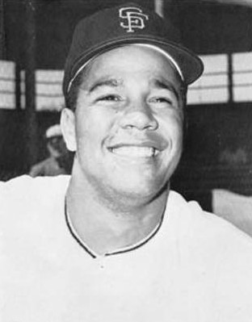
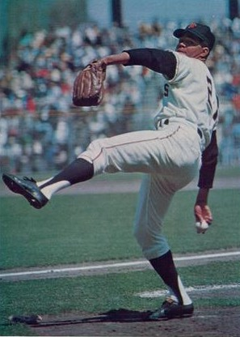
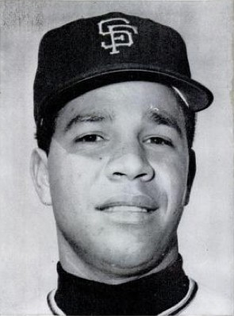
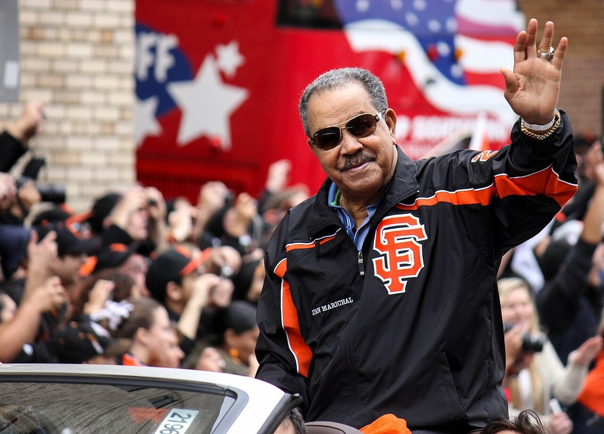

Juan Marichal
The leg kick you could pick out in silhouette, 16 scoreless innings against Warren Spahn, and more wins in the 1960s than anybody alive.
The Juan Marichal Story
Sandy Koufax got the Cy Youngs. Bob Gibson got the World Series. We got Juan Marichal, and I wouldn't trade him for either one. From 1963 through 1969 he was the best right handed pitcher in baseball, and he did it with a kick so high and so strange that one writer said you could pick him out from a silhouette.
Juan Antonio Marichal Sanchez was born October 20, 1937, in Laguna Verde, a farming village in Monte Cristi province in the northwest of the Dominican Republic. His father died when he was three. At ten he fell into a coma for nine days and nearly didn't come out of it. He grew up playing with golf balls wrapped in cloth by the local shoemaker, bats cut from tree branches and gloves sewn from canvas tarp, and his playmates included the Alou brothers, Felipe, Matty and Jesus, who all wound up Giants too.
He started as a shortstop and switched to pitching after watching Bombo Ramos of the Dominican national team throw sidearm. After he beat the Dominican Air Force team 2 to 1, Ramfis Trujillo, the dictator's son, had him enlisted on the spot so he could pitch for them. The Giants signed him for a $500 bonus in 1958.
He went 21 and 8 with a 1.87 ERA at Michigan City in 1958 and 18 and 13 with 208 strikeouts at Springfield in 1959. That's where manager Andy Gilbert talked him out of throwing sidearm and into an overhand motion, and the famous kick was born. On July 19, 1960, in his big league debut at Candlestick, he retired the first 19 Phillies and lost the no hitter on a two out pinch single by Clay Dalrymple in the eighth. One hit, one walk, 12 strikeouts, a 2 to 0 shutout.
He went 18 and 11 in 1962 with the best ERA on the staff, married Alma Rosa Carvajal that March, started the deciding playoff game in Los Angeles, and was throwing four shutout innings in Game 4 of the World Series at Yankee Stadium when he hurt his hand trying to bunt against Whitey Ford. He didn't pitch again in the Series.
Then he became the best. In 1963 he went 25 and 8 with a 2.41 ERA and a league leading 321 innings, no hit Houston on June 15, and two weeks later threw 16 shutout innings against Warren Spahn. He was 21 and 8 in 1964 with a league leading 22 complete games, and 22 and 13 with a 2.13 ERA and ten shutouts in 1965, the year he was the All Star Game MVP.
1965 also brought the worst moment of his career. On August 22 at Candlestick, in a tight race with the Dodgers, he came to bat against Koufax, John Roseboro's return throw buzzed past his ear, and Marichal hit Roseboro in the head with his bat. It set off a 14 minute brawl. He was suspended eight games and fined $1,750, then the largest fine in National League history, and the Giants finished two games out.
In 1966 he went 25 and 6 with a 2.23 ERA, and in September he even hit a walk off homer off Roy Face. In 1968 he won a league leading 26 games with 30 complete games and 325 innings. In 1969 he led the league with a 2.10 ERA and eight shutouts. Through all of it he never got a single Cy Young vote in the 1960s. Writers named only one pitcher on their ballots back then, there was one award for both leagues until 1967, and in each of his four best seasons Koufax or Gibson won it unanimously.
A severe reaction to penicillin in the spring of 1970 sapped his strength and left him with chronic back pain and arthritis. He still won his 200th game that August, and in 1971 he went 18 and 11, pitched the division clincher in San Diego on the last day of the season, and went the distance in a 2 to 1 loss to the Pirates in the NLCS. The decline after that came fast. The Giants sold him to the Red Sox in December 1973, and after a short 1974 in Boston and two starts for the Dodgers in 1975, of all teams, he retired.
He went 238 and 140 in a Giants uniform, the most wins by any pitcher since the franchise came west, with 244 complete games, 52 shutouts and 2,281 strikeouts. The Hall of Fame made him wait. He came up seven votes short in 1982. John Roseboro, by then his friend, publicly urged the writers to vote for him, and in 1983 Marichal became the first Dominican elected to Cooperstown. When Roseboro died in 2002, Marichal was an honorary pallbearer.
The Giants retired his number 27 in 1975 and unveiled his statue outside the ballpark in 2005. Back home he ran the A's Dominican program, served from 1996 to 2000 as his country's Minister of Sports, and saw Estadio Quisqueya renamed Estadio Quisqueya Juan Marichal in 2015. Since 2021 the best Dominican player in the majors each season wins the Juan Marichal Prize.
What He Meant to Us
Marichal is the most underrated great pitcher in baseball history, and it's not close. He won 191 games in the 1960s. Gibson was second with 164. He won more than Gibson in every single season of the decade, and still never got one Cy Young vote in the 1960s. Not one. You can blame Koufax for some of that. You can't blame Koufax for all of it.
The kick is what everybody remembers, and they should. The front leg kicked sky high, the pitching hand nearly scraped the dirt, and then the ball came from overhand, three quarters or sidearm. He had five pitches and could throw most of them for strikes from any slot. Pete Rose, who saw more pitchers than anybody, said Marichal was the best he faced.
We have to talk about Roseboro. It was ugly and there's no defending it, and Marichal never tried to. What I love is what came after. The two of them became real friends, Roseboro campaigned to get him into Cooperstown, and Marichal thanked him in his induction speech and served as an honorary pallbearer at his funeral. That's a better ending than baseball usually gives you.
If I had to show a kid one Marichal game it would be July 2, 1963. Twenty five years old, 16 innings, and when Alvin Dark tried to take him out he pointed at the 42 year old Spahn on the other mound and said he wasn't coming out while that man was still out there. Mays won it in the 16th. Jim Kaplan wrote a whole book calling it the greatest game ever pitched, and I'm not going to argue with him.
In Pictures



Why He Was Clutch
Marichal's clutch case lives in the big regular season games, because the Giants of his era only reached October twice. Against the best, he was at his best: 16 shutout innings against Warren Spahn in 1963, a one hitter in his debut, a no hitter, and an ERA of 0.50 across eight All Star Games, where he faced the best lineup the American League could put together every summer.
When the Giants needed a clincher in 1971, they gave him the ball on the last day of the season in San Diego. He went the distance, allowed one unearned run, and the Giants won the NL West 5 to 1. Then in Game 3 of the NLCS in Pittsburgh he went eight innings and lost 2 to 1 on two solo homers. You can't pitch much better and lose.
In the 1962 World Series he had four shutout innings in Game 4 at Yankee Stadium before he hurt his hand bunting. In the 1962 playoff finale he held the Dodgers to one run into the sixth. The man was built for the big night. The Giants just didn't give him many of them.
Clutch Moments
- July 19, 1960
A one hitter in his debut
In his first big league game, at Candlestick against the Phillies, Marichal struck out Ruben Amaro to start the night and retired the first 19 batters. Clay Dalrymple broke up the no hitter with a two out pinch single in the eighth. Final line: one hit, one walk, 12 strikeouts, a 2 to 0 shutout.
- October 8, 1962
Four shutout innings at Yankee Stadium
Game 4 of the World Series. Marichal had a 2 to 0 lead after four innings, allowing two hits and striking out four, when he hurt his hand trying to bunt against Whitey Ford in the fifth. He was done for the Series, but the Giants won the game 7 to 3 to even it at two games apiece.
- June 15, 1963
No hitter against Houston
At Candlestick, Marichal held the Colt .45s hitless, walking two and striking out five. He retired the first 14 batters and struck out Brock Davis to end it. Chuck Hiller's eighth inning RBI double was the only run in a 1 to 0 win.
- July 2, 1963
Sixteen innings against Spahn
Marichal, 25, against Warren Spahn, 42, at Candlestick. Both went the distance. Marichal gave up eight hits and four walks, struck out ten, and held Hank Aaron 0 for 6. Twice Alvin Dark offered to take him out after the 12th inning. The second time Marichal pointed at Spahn and told Dark he wasn't ready to come out.
Willie Mays homered with one out in the bottom of the 16th. Giants 1, Braves 0. Jim Kaplan later called it the greatest game ever pitched.
- July 13, 1965
All Star MVP in Minnesota
Marichal started for the National League in Minnesota and threw three scoreless innings, allowing only a single to Vic Davalillo, who was erased on a double play. He also singled off Mudcat Grant. The NL won 6 to 5, and he was named the game's Most Valuable Player.
- September 21, 1966
Walking it off himself
The Pirates scored twice in the top of the ninth at Candlestick to take a 5 to 3 lead, then Tom Haller tied it with a two run homer off Roy Face. One out later up came Marichal, and he homered off Face to win it 6 to 5. It was his 23rd win of a 25 and 6 season.
- August 28, 1970
Win number 200
Coming back from the penicillin reaction that wrecked his 1970 season, Marichal beat the Pirates 5 to 1 at Candlestick with a complete game for the 200th win of his career, his sixth win in a row.
- September 30, 1971
Clinching the West in San Diego
Last day of the regular season, the Giants needing a win. Marichal threw a complete game five hitter with no walks, the only run against him unearned, and the Giants beat the Padres 5 to 1 to win the National League West by one game over the Dodgers.
The Highlights
What They Said About Marichal
“Do you see that man on the mound? That man is forty-two, and I'm twenty-five. I'm not ready for you to take me out.”
“Johnny's forgiving me was one of the best things that happened in my life. I wish I could have had John Roseboro as my catcher.”
“Before I die, I will be happy if people say of me that I did something good for other people. … I want to be remembered more for helping people than for what I did in baseball.”
“Never seems to exert himself”
Career Stats
| Year | Team | W | L | ERA | G | GS | CG | SHO | SV | IP | H | ER | BB | SO | WHIP |
|---|---|---|---|---|---|---|---|---|---|---|---|---|---|---|---|
| 1960 | SF | 6 | 2 | 2.66 | 11 | 11 | 6 | 1 | 0 | 81.1 | 59 | 24 | 28 | 58 | 1.07 |
| 1961 | SF | 13 | 10 | 3.89 | 29 | 27 | 9 | 3 | 0 | 185.0 | 183 | 80 | 48 | 124 | 1.25 |
| 1962 | SF | 18 | 11 | 3.36 | 37 | 36 | 18 | 3 | 1 | 262.2 | 233 | 98 | 90 | 153 | 1.23 |
| 1963 | SF | 25 | 8 | 2.41 | 41 | 40 | 18 | 5 | 0 | 321.1 | 259 | 86 | 61 | 248 | 1.00 |
| 1964 | SF | 21 | 8 | 2.48 | 33 | 33 | 22 | 4 | 0 | 269.0 | 241 | 74 | 52 | 206 | 1.09 |
| 1965 | SF | 22 | 13 | 2.13 | 39 | 37 | 24 | 10 | 1 | 295.1 | 224 | 70 | 46 | 240 | 0.91 |
| 1966 | SF | 25 | 6 | 2.23 | 37 | 36 | 25 | 4 | 0 | 307.1 | 228 | 76 | 36 | 222 | 0.86 |
| 1967 | SF | 14 | 10 | 2.76 | 26 | 26 | 18 | 2 | 0 | 202.1 | 195 | 62 | 42 | 166 | 1.17 |
| 1968 | SF | 26 | 9 | 2.43 | 38 | 38 | 30 | 5 | 0 | 326.0 | 295 | 88 | 46 | 218 | 1.05 |
| 1969 | SF | 21 | 11 | 2.10 | 37 | 36 | 27 | 8 | 0 | 299.2 | 244 | 70 | 54 | 205 | 0.99 |
| 1970 | SF | 12 | 10 | 4.12 | 34 | 33 | 14 | 1 | 0 | 242.2 | 269 | 111 | 48 | 123 | 1.31 |
| 1971 | SF | 18 | 11 | 2.94 | 37 | 37 | 18 | 4 | 0 | 279.0 | 244 | 91 | 56 | 159 | 1.08 |
| 1972 | SF | 6 | 16 | 3.71 | 25 | 24 | 6 | 0 | 0 | 165.0 | 176 | 68 | 46 | 72 | 1.35 |
| 1973 | SF | 11 | 15 | 3.82 | 34 | 32 | 9 | 2 | 0 | 207.1 | 231 | 88 | 37 | 87 | 1.29 |
| 1974 | BOS | 5 | 1 | 4.87 | 11 | 9 | 0 | 0 | 0 | 57.1 | 61 | 31 | 14 | 21 | 1.31 |
| 1975 | LAD | 0 | 1 | 13.50 | 2 | 2 | 0 | 0 | 0 | 6.0 | 11 | 9 | 5 | 1 | 2.67 |
| Career | 243 | 142 | 2.89 | 471 | 457 | 244 | 52 | 2 | 3507.1 | 3153 | 1126 | 709 | 2303 | 1.10 |
Full career. BOS is the Boston Red Sox (1974), LAD the Los Angeles Dodgers (1975). Scroll the table sideways on a phone.
Postseason
| Year | Team | W | L | ERA | G | GS | CG | SHO | SV | IP | H | ER | BB | SO | WHIP |
|---|---|---|---|---|---|---|---|---|---|---|---|---|---|---|---|
| 1962 | SF | 0 | 0 | 0.00 | 1 | 1 | 0 | 0 | 0 | 4.0 | 2 | 0 | 2 | 4 | 1.00 |
| 1971 | SF | 0 | 1 | 2.25 | 1 | 1 | 1 | 0 | 0 | 8.0 | 4 | 2 | 0 | 6 | 0.50 |
| Career | 0 | 1 | 1.50 | 2 | 2 | 1 | 0 | 0 | 12.0 | 6 | 2 | 2 | 10 | 0.67 |